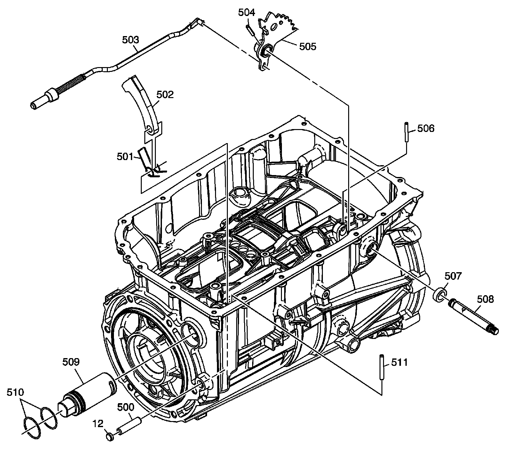

Park System Components
Disassembled Views (6L80)
Park System Components:

12 - A/Trans Case Plug
500 - Park Pawl Shaft
501 - Park Pawl Spring
502 - Park Pawl
503 - Park Pawl Actuator Assembly
504 - Manual Shaft Detent Lever Hub Pin
505 - Manual Shaft Detent Lever Assembly
506 - Manual Shift Shaft Pin
507 - Manual Shift Shaft Seal
508 - Manual Shift Shaft
509 - Park Pawl Actuator Guide
510 - Park Pawl Actuator Guide (O-ring) Seal
511 - Park Pawl Actuator Guide Pin